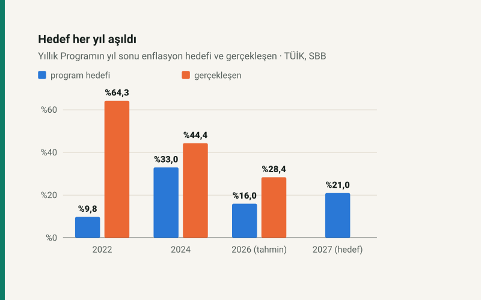

Kısa cevap
Program 2027 için yıl sonu enflasyon hedefini %21,0, büyümeyi %4,2 koyuyor. Bu bir zam kararı değil; ama aylık ve maaş zammının girdisi olan enflasyonun hedefi. Hedef tutar ve yıl eşit ilerlerse Temmuz 2027'de SSK ve Bağ-Kur zammı %10,0, memur zammı %8,95 civarında olur.
SGK tarafında kırılma 2027'de: prim tahsilatı, emekli aylıkları ve gelirlerin %98,4'ini karşılıyor (2026'da %109,5). Gelir-gider farkı −1.955,1 milyar TL'ye çıkıyor; devlet katkısının 1 Ağustos 2026'da kaldırılması bu tabloyu değiştiriyor.
Hedefler geçmişte tutmadı: programların kendi yılları için koyduğu enflasyon hedefi 2022, 2024, 2026 yıllarının hepsinde gerçekleşmenin altında kaldı. Program metninde "kademeli emeklilik" ifadesi geçmiyor.
Programın 2027 hedefleri
Belgenin makro çerçevesi Orta Vadeli Program (2027–2029) ile aynı. Sitenin konusuna dokunan hedefler:
| Gösterge | 2026 (tahmin) | 2027 (program) | Sayfa |
|---|---|---|---|
| GSYH büyümesi | %3,3 | %4,2 | s.12, s.11 |
| Yıl sonu TÜFE | %28,4 | %21,0 | s.12, s.39 |
| İstihdam artışı | — | 657 bin kişi | s.16 |
| Genel devlet gelirleri / GSYH | %31,9 | %31,4 | s.108 |
| Genel devlet harcamaları / GSYH | %34,6 | %34,7 | s.108 |
| Genel devlet dengesi / GSYH | %−2,7 | %−3,3 | s.108 |
Gelirlerin GSYH'ya oranı düşerken harcamalarınki artıyor; genel devlet açığı GSYH'nın yüzde 2,7'sinden yüzde 3,3'üne genişliyor. Kamu sabit sermaye yatırımları 2027'de 3,48 trilyon TL (s.25).
Enflasyon hedefleri ne kadar tuttu?
Yıllık Program her yıl, kendi yılı için bir yıl sonu enflasyon hedefi koyar. Elimizdeki programların hedefini, TÜİK'in o yılın Aralık ayındaki yıllık TÜFE'siyle karşılaştırdım.
Programın yıl sonu enflasyon hedefi ve gerçekleşen
Her programın kendi yılı için koyduğu hedef (koyu) ve o yılın Aralık ayındaki yıllık TÜFE (açık).
| Program yılı | Hedef | Gerçekleşen | Fark |
|---|---|---|---|
| 2022 | %9,8 | %64,27 | +54,5 puan |
| 2024 | %33,0 | %44,38 | +11,4 puan |
| 2026 | %16,0 | %28,4 (tahmin) | +12,4 puan |
| 2027 | %21,0 | — | — |
Gerçekleşme her yıl hedefin üstünde kaldı. Bu, 2027 hedefinin bir alt sınır gibi okunması gerektiği anlamına gelmez; ama zam ve bütçe hesaplarında hedefi tek senaryo almamak için yeterli gerekçe.
%21,0 hedefi zamma nasıl yansır?
SSK ve Bağ-Kur aylıkları Temmuz 2027'de Ocak–Haziran 2027 enflasyonu kadar artar; memur zammı aynı enflasyon ile toplu sözleşmedeki %4'ten çıkar. Yıllık hedefin yılın iki yarısına eşit dağıldığını varsayarak:
| Senaryo | Aylık ortalama | Ocak–Haziran 2027 | SSK ve Bağ-Kur | Memur |
|---|---|---|---|---|
| Program hedefi tutarsa (%21,0) | %1,60 | %10,0 | %10,0 | %8,95 |
| 2026 hızı sürerse (%28,4) | %2,11 | %13,3 | %13,3 | %12,24 |
Hedef, ayda ortalama %1,60 fiyat artışı demek. Son açıklanan üç ayın ortalaması %1,82. Ocak 2027 zammı ise 2026'nın ikinci yarısına bağlı; onun hesabı emekli ve memur zammı yazılarında.
SGK: primler aylıkları artık karşılamıyor
Programın SGK tablosu (Tablo I:46) 2027 için ilk kez şunu gösteriyor: toplanan prim, ödenen emekli aylıkları ve gelirlerden az. Sağlık giderleri eklenince açık büyüyor.
SGK: prim tahsilatı ve aylık ödemeleri
Prim tahsilatı (koyu) ve sigorta ödemeleri, yani emekli aylıkları ile gelirler (açık); cari fiyatlarla trilyon TL.
| Kalem | 2024 | 2025 | 2026 | 2027 |
|---|---|---|---|---|
| Prim tahsilatı | 2.823,1 | 4.063,6 | 5.701,9 | 7.085,4 |
| Toplam gelir | 3.852,3 | 5.442,4 | 7.194,2 | 7.889,6 |
| Aylık ve gelir ödemeleri | 2.700,9 | 3.822,6 | 5.208,6 | 7.198,4 |
| Toplam gider | 3.863,5 | 5.406,6 | 7.296,7 | 9.844,7 |
| Gelir-gider farkı | −11,3 | 35,7 | −102,5 | −1.955,1 |
| Bütçeden transfer | 1.436,7 | 1.931,7 | 2.075,9 | 3.450,0 |
| Prim / aylık ödemeleri | %104,5 | %106,3 | %109,5 | %98,4 |
| Prim / toplam gider | %73,1 | %75,2 | %78,1 | %72,0 |
Kırılmanın bir kaynağı gelir tarafında: program, 2026'da SGK gelirlerinin GSYH'ya oranındaki düşüşü açıkça "devlet katkısının Ağustos ayından itibaren kaldırılması"na bağlıyor (s.71). Tabloda "diğer gelirler" 1.492,3 milyar TL'den 804,1 milyar TL'ye iniyor. Devlet katkısının ne olduğunu ve kalkmasının hesabını SGK devlet katkısı yazısında anlattım.
Öbür kaynak demografi. Program, çalışan sayısının aylık alan sayısına oranının 2022'de 2,0 iken 2025'te 1,62'ye indiğini ve bunu 2023'teki emeklilik koşulu değişikliğine bağladığını yazıyor (s.110). Çırak ve stajyerler hariç oran 1,84'ten 1,49'a geriledi. 2027 hedefi dosya bazında 1,6 (s.115).
İşsizlik Sigortası Fonu
Fon hâlâ fazla veriyor, ama fazla küçülüyor: giderler istihdam teşvikleri ve destek programlarıyla primden hızlı büyüyor.
| Kalem | 2024 | 2025 | 2026 | 2027 |
|---|---|---|---|---|
| Prim gelirleri | 162,2 | 259,2 | 335,9 | 419,4 |
| Toplam gelir | 336,0 | 526,0 | 685,6 | 767,9 |
| İşsizlik ödeneği ve benzeri | 35,2 | 65,2 | 91,0 | 122,3 |
| Toplam gider | 174,0 | 256,5 | 382,7 | 616,0 |
| Fon varlığı | 359,0 | 628,5 | 931,4 | 1.083,2 |
Kaynak: Tablo I:47 (s.73). İşsizlik ödeneğinin kendisi giderlerin küçük bir kısmı; kimin ne kadar alacağını işsizlik maaşı aracı hesaplar.
Programda ne var, ne yok?
Sosyal güvenlik ve vergi bölümlerinde ücretliyi ve emekliyi ilgilendiren tedbirler (tedbir numarası ve sayfasıyla):
- Tedbir 406.2 (s.112): Aylık bağlama sistemi kişilerin daha çok istihdamda kalmasını teşvik edecek ve mali yük getirmeyecek şekilde yeniden düzenlenecektir.
- Tedbir 406.1 (s.112): Sosyal güvenlik sisteminde hakkaniyeti ve aktüeryal dengeyi güçlendirecek reformlar hayata geçirilecektir.
- Tedbir 394.1 (s.105): Prime esas kazanç bildirimlerine yönelik denetimler etkinleştirilecektir.
- Tedbir 408.2 (s.113): Prime esas kazancı bir önceki aya göre yüzde 20'den fazla azalan sigortalılara kısa mesaj yoluyla uyarı gönderilecektir.
- Tedbir 401.1 (s.107): Vergi mevzuatında yer alan istisna, muafiyet ve indirimlerin etkinliği gözden geçirilecektir.
- Tedbir 407.1 (s.113): Yaşlı bakım hizmetlerinin finansmanı için bakım sigortası kurulacaktır.
- Tedbir 404.3 (s.112): Düşük gelirli esnaf, sanatkâr, çiftçiler ve mevsimlik çalışanlar gibi gruplara özel sosyal sigorta programları oluşturulacaktır.
Bunlar yön belirtir; oran, yaş ya da gün sayısı vermez. Programda gelir vergisi tarifesine, asgari ücrete ya da 2027 zam oranlarına ilişkin bir rakam yok. 468 sayfalık metinde "kademeli emeklilik" ifadesi de geçmiyor; tedbir 406.2 tersine "daha çok istihdamda kalmayı" teşvik eden bir aylık bağlama sistemi öngörüyor. Teklifin TBMM'deki durumu kademeli emeklilik yazısında.
Programın 2026 rakamları sitenin hesaplarıyla aynı mı?
Program 2026'da yürürlüğe giren düzenlemeleri sayıyor (s.108–109). Aynı rakamlar sitenin araçlarını besleyen parametrelerde:
| Kalem | Programda | Sitede | Sitedeki kaynak |
|---|---|---|---|
| Brüt asgari ücret (TL) | 33.030 | 33.030 | bordro/parametreler.js |
| Net asgari ücret (TL) | 28075,5 | 28075,5 | bordro/parametreler.js |
| Prim tavanı (asgari ücretin katı) | 9 | 9 | bordro/parametreler.js |
| Borçlanma primi (%) | 45 | 45 | bordro/parametreler.js |
| GSS primi, kendi ödeyen (%) | 6 | 6 | bordro/parametreler.js |
| İşveren teşviki, imalat dışı (puan) | 2 | 2 | bordro/parametreler.js |
| SSK/Bağ-Kur zammı, Ocak 2026 (%) | 12,2 | 12,2 | TÜFE serisi, zam motoru |
| SSK/Bağ-Kur zammı, Temmuz 2026 (%) | 17,8 | 17,8 | TÜFE serisi, zam motoru |
| Memur emeklisi zammı, Ocak 2026 (%) | 18,6 | 18,6 | zam motoru, toplu sözleşme |
| Memur emeklisi zammı, Temmuz 2026 (%) | 13,5 | 13,5 | zam motoru, toplu sözleşme |
| En düşük emekli aylığı (TL) | 23.552 | 23.552 | bordro/emeklilik-parametreleri.js |
11 kalemin 11'i aynı. Zam oranlarını program bir ondalıkla yazıyor; site TÜİK serisinden iki ondalıkla hesaplıyor.
Varsayımlar ve sınırlar
- Program rakamları 2027 Yıllık Programı'nın SBB'nin yayımladığı metin sürümünden, basılı sayfa numaralarıyla aktarıldı; Resmî Gazete'deki sürüm taranmış görüntüdür. Tabloların iç tutarlılığı (gelir = prim + diğer, fark = gelir − gider) testle sınanır.
- 2026 değerleri programın gerçekleşme tahmini, 2027 değerleri program hedefidir; ikisi de kesinleşmiş rakam değildir.
- Zam senaryosu yıllık enflasyonun yılın iki yarısına eşit dağıldığını varsayar. Memur zammında 2027 ikinci yarısı için toplu sözleşmedeki %4 kullanılır; 2028 oranları henüz belirlenmedi.
- Hedef ve gerçekleşme karşılaştırmasında 2023 ve 2025 programlarının metnine ulaşılamadı; o yıllar tabloya alınmadı.
- Yazı programı açıklar ve sitenin hesaplarına bağlar; programda yer almayan bir düzenlemeyi yapılmış gibi göstermez.
Kaynaklar
- 2027 Yılı Cumhurbaşkanlığı Yıllık Programı, Resmî Gazete 27 Ekim 2026, sayı 33413 (Mükerrer), Karar sayısı 11934; metin sürümü: Strateji ve Bütçe Başkanlığı
- Önceki hedefler: 2022, 2024 ve 2026 Yıllık Programları
- Gerçekleşen yıllık TÜFE: TÜİK; sitenin serisi TCMB tablosundan her gece güncellenir
- Zam kuralları: 5510 sayılı Kanun m.55; toplu sözleşme oranları Kamu Görevlileri Hakem Kurulu kararı (RG 27.8.2025/32561)
Sık sorulan sorular
2027 Yıllık Programı'nda enflasyon hedefi ne?
2027 yıl sonu için %21,0 (s.39). 2026 için programın tahmini %28,4.
Program emekli ve memur zammını belirliyor mu?
Hayır. Zam oranları kanuna ve toplu sözleşmeye göre gerçekleşen enflasyondan hesaplanır. Program yalnız enflasyon hedefini verir.
Programda kademeli emeklilik var mı?
Hayır. 468 sayfalık metinde bu ifade geçmiyor. Tedbir 406.2 daha uzun istihdamda kalmayı teşvik eden bir aylık bağlama sistemi öngörüyor.
SGK'nın 2027 açığı ne kadar?
Program 1.955,1 milyar TL gelir-gider farkı öngörüyor; bütçeden SGK'ya 3.450 milyar TL transfer planlanıyor (s.72–73).